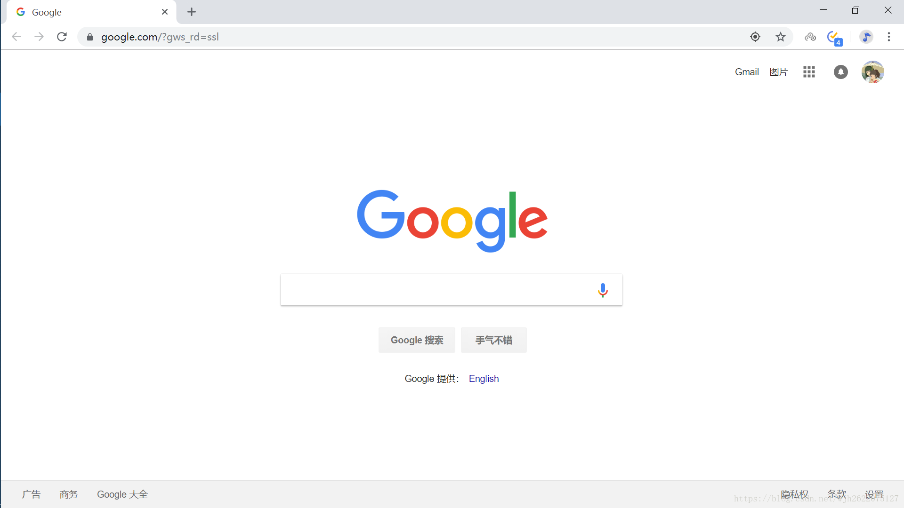
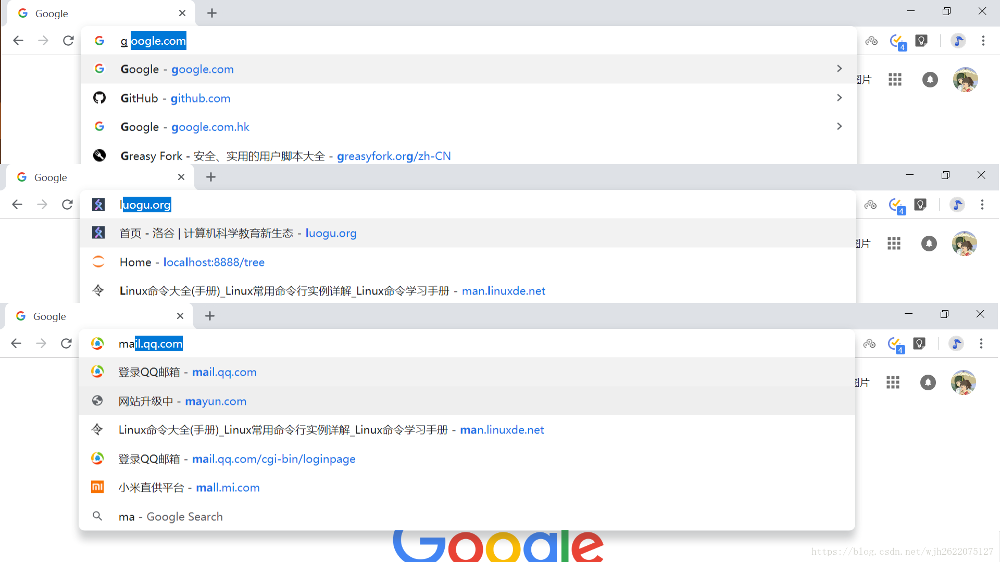
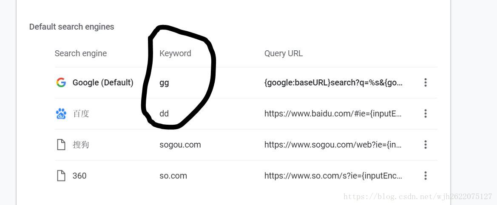
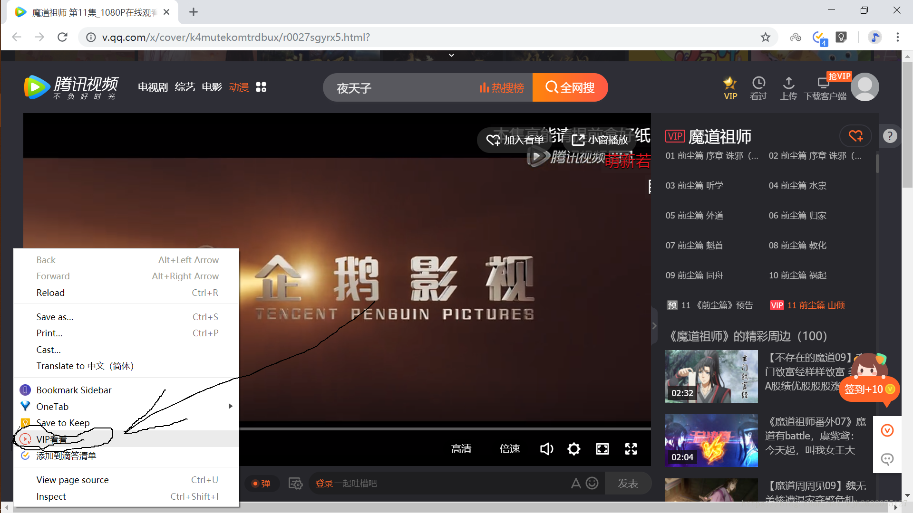
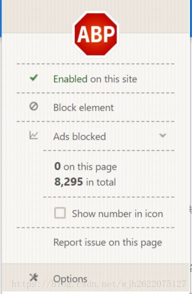
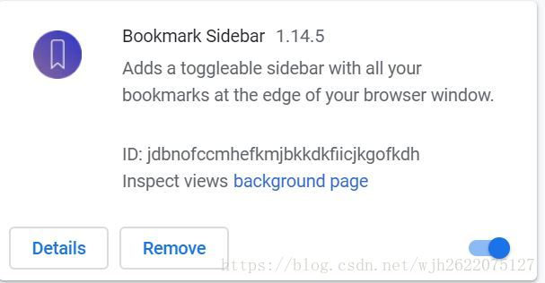
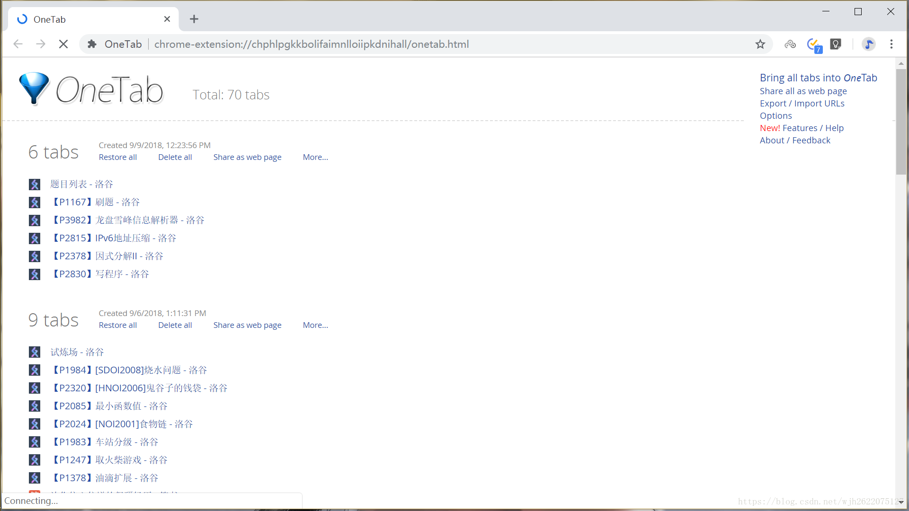
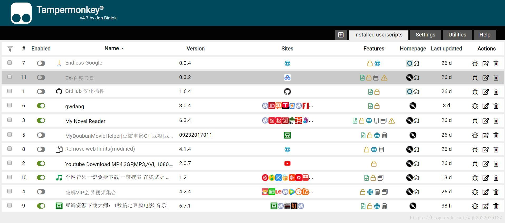

Chrome浏览器使用指南
Contents
目录
废话
从ie到国产，从国产到火狐，最后终于到了Chrome，这条路可谓是曲折，与Chrome相见恨晚。用过这么多浏览器，对现在用的Chrome最满意。尤其是十周年更新了69版本后，配合自己搭建的梯子，越用越舒服，简直爱不释手。先放张美图  这是浏览器打开的界面，简洁唯美，清新灵动。
Chrome 10周年之际，我打算写一篇Chrome使用指北⚘，把我使用的觉得有用的经验技巧分享出来。但由于每个人的身份不一样，所以同样的内容有的人觉得有用有的人却觉得没用，大家各自取舍吧。
快速进入网页
我平常有记忆网站域名的习惯，所以我要进入一个网站通常不用在书签里面查找或者在搜索引擎搜索，而是直接输入域名。而配合Chrome浏览器的url自动补全功能，我通常只要输入一两个字母，即可快速进入想要进入的网站。极大地提高了工作学习效率。
如图，分别是快速进入谷歌google.com, 洛谷luogu.org, QQ邮箱mail.qq.com的展示。不能更方便。

快速切换搜索引擎
有时候我们会用百度，有时候会用谷歌，诚然在切换时我们可以直接进入他们的网站进行搜索，但是，还有更快的方法，那就是在搜索栏里输入自定义的关键字，然后按空格或tab键，实现搜索引擎的快速切换。
可以用来快速网购商品，搜索豆瓣某电影，进行谷歌翻译，搜索维基百科，盘搜搜搜资源。。。
步骤是：Settings -> Search engine -> Manage search engines; 然后就请为所欲为吧。

同步账号信息
Chrome是多平台浏览器，它提供的同步功能使得我们更换平台或重装浏览器时非常方便。账号密码，历史纪录，书签，甚至是PC端的插件，一键同步，当然前提是你得能够FQ。如何FQ？自己动手丰衣足食，可以参考我写的一篇博客，自己动手搭建梯子（曾有数千访问量,被CSDN一日腰斩，重发后一直处于潜水状态）
Chrome插件
**所谓无插件不Chrome，插件可谓是Chrome的灵魂所在。**网上关于Chrome插件的分享有很多，我推荐几个我常用的。
如何安装Chrome插件
一般说来有两种方法
第一种最官方最正式最方便但对国内最不友好。那就是到Chrome Web Store, 找到插件安装即可。不会FQ的童鞋只能WTF。
第二种是打开More tools -> Extensions 页面，把下载好的crx扩展文件拖拽进去就好了。但是，在2018-9-8这一日，在Version 69.0.3497.81 (Official Build) (64-bit)这一版本，我是无法拖拽了，也许是谷歌提升了对插件安装来源的要求。
下面推荐几个插件
VIP看看
此插件可以看各大视频网站的vip视频，只要在视频页点击右键，会找到有个vip看看的选项，点击即可跳转，然后开心的看视频了。不过分辨率不高，会模糊。
给大家推荐一个看VIP视频的盗版网站. 以后工作了一定要买正版VIP吖

Adblock Plus屏蔽广告
屏蔽广告插件是必装的了，对比了几个屏蔽广告插件，发现Adblock Plus效果最好。体现在用它们把百度搜索页面的百度热搜屏蔽掉，这个插件最稳定而无复发。屏蔽百度热搜可以参考我写的这篇文章。

书签

这是一个很好用也比较漂亮的书签插件，虽然我平时很少用书签但觉得它挺不错就推荐了。书签图片就不放出来了（有隐私吖），应该不会让大家失望的。
OneTab 管理标签页
打开的标签页太多又不想把他们删除怎么办？别急，OneTab来帮你。使用OneTab，你就可以一键将所有标签页合到一个OneTab标签页里面了，之后需要用哪个就点哪个，或者一键回复呀。

油猴
这个可是插件中的神器呀，如果说Chrome是一个有丰富插件的平台，那么油猴就是有丰富脚本的插件，对于我来说，它相当于很多个“插件”。
它有什么用呢？它里面有全网音乐下载脚本，百度网盘外链脚本，比价脚本，youtube视频下载脚本，破解VIP视频脚本，小说阅读模式脚本。。。好用的东西简直不能更多。

SetupVP_N
这个得偷偷地说，这是一个非常好用的FQ插件，只需注册一个账号，就可以免费使用啦，不限流量不限时的哦。经过实际测试，俄罗斯结点是连的最快的，在油管上看1080P的视频都毫无压力哦。
后记
关于Chrome的使用经验就分享到这里了，希望能帮大家提高工作效率吧: > 如果觉得对你有所帮助，就请点个赞吧。
Author 姬小野
LastMod 2018-09-28